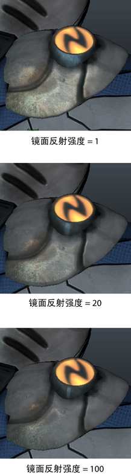

以下为 DirectX 11 Shader 节点的属性，指定了 AutodeskUberShader.fxo 着色器文件。
要使用该着色器，您必须在 Viewport 2.0 的 DirectX 11 环境中工作，并启用 dx11shader.mll 插件。详细信息请参见将 DirectX 11 与 Viewport 2.0 结合使用。
可以在 Hypershade “创建”(Create)选项卡中找到 DirectX 11 Shader。创建着色器后，会自动加载 AutodeskUberShader.fxo 文件。
dx11Shader.mll 插件可使您在 Viewport 2.0 中加载并查看 HLSL 着色器。使用“Hypershade”创建 DirectX 11 Shader 时，会自动连接 AutodeskUberShader.fxo 文件；但是，您也可以加载自定义 HLSL 着色器。此外，<maya directory>\presets\HLSL11\examples\ 中提供了其他示例 HLSL 着色器。
已提供 dx11Shader_defaults 预设。您可以使用该预设将参数还原到使用着色器最初编译的值。
有关 Mipmap 级别的信息，请参见此页面中的 mipmaplevels：Viewport 2.0 中 dx11Shader 和 glslShader 插件所支持的语义和注释。
- 着色器
- 灯光绑定
- Lighting
- Ambient and Emissive
- Diffuse
- Opacity
- Specular
- Normal
- Reflection
- Tessellation and Displacement
- Translucency
- UV
- 曲面数据
- 默认纹理数据
- 支持的图像格式
着色器
- 着色器文件(Shader File)
- 导航到着色器文件，以便将其指定给 DirectX11 Shader。
DirectX11 Shader 采用以下顺序在下列位置搜索 .fx 文件：
- `workspace -q -rd`
- `workspace -q -rd` + "/renderData/shaders"
- `workspace -fre shaders`
- `getenv("DX11SHADER_ROOT")`
- `getenv("DX11SHADER_ROOT")` + "/shaders"
- ${MAYA_LOCATION}/presets/HLSL11/examples
` 表示执行 MEL 或 C 函数来获取所需的值。
注： 在 <maya directory>\presets\HLSL11\examples\ 中提供了 AutodeskUberShader.fxo 文件以及其他示例 HLSL11 着色器。单击 以重新加载 .fx 文件，然后单击 在默认的文本编辑器中对其进行编辑。
- 技术(Technique)
- 这些选项在相同的着色材质内提供不同的着色方法。
注： 下面列出了用于 AutodeskUberShader 的不同技术。不同的着色器具有不同的技术来实现各种效果。提示： 您可以使用“通道盒”(Channel Box)或设置“属性总表”(Attribute Spread Sheet)中的“技术”(Technique)值，通过一个步骤为多个 dx11Shader 更改技术。使用整数来设置“属性总表”(Attribute Spread Sheet)中的“技术”(Technique)值。TessellationOFF = 0，TessellationON = 1，以及 WireFrame = 2。该快捷方式仅适用于更改同一 fx 着色器的多个实例。
-
TessellationOFF：这是默认选项，并且仅在工作区显示网格，无需任何细分。
-
TessellationON：该选项使用着色级别细分以提供更平滑的模型，而无需额外的几何体。
-
WireFrame：该选项提供细分网格的线框版本，便于您查看 TessellationON 功能的细分。
-
灯光绑定
- Light0 / Light 1 / Light 2
-
如果您选择“自动绑定”(Automatic Bind)选项，Maya 会自动将场景中的灯光指定给着色器。如果场景中的灯光少于三个，除非创建新的灯光，否则 Light 1 和/或 Light 2 处于未绑定状态。如果选择了该选项，则 Maya 会指示为 Light0 / Light 1 / Light 2 中的每个绑定的灯光。
使用导航图标 可访问已连接灯光形状的“属性编辑器”(Attribute Editor)。
您还可以选择“使用着色器设置”(Use Shader Settings)以避免绑定灯光。这样，您可以通过 DirectX 11 Shader 的“属性编辑器”(Attribute Editor)中的Light 0 / Light 1 / Light 2属性调整灯光属性。
您还可以手动绑定灯光。从下拉列表中选择要将着色器绑定到的场景灯光。
AutodeskUberShader 支持点光源、聚光灯、环境光或平行光。
警告： 绑定灯光之后，您无法在 dx11Shader 的“属性编辑器”(Attribute Editor)中更改其参数。相反，您必须从灯光的“属性编辑器”(Attribute Editor)进行更改。注： 加载 DirectX 11 Shader 后，Maya 会自动绑定设置为“自动绑定”(Automatic Bind)的灯光。共享相同 Object 属性的所有参数都将被视为定义一个灯光。如果在 Object 属性字符串中找到一个特定的灯光关键字（即 ambient/point/spot/directional），则 Maya 将连接场景中找到的该类型的第一个灯光。完成该操作后，任何未连接的灯光会根据位置/方向参数的兼容性连接到其余场景灯光。提示：如果您选择“灯光绑定”(Light Binding)下的“自动绑定”(Automatic Bind)，并且您的场景中有一个以上的环境光，则场景中的所有环境光将合并为一个以进行视口渲染，其结果是Light 0/Light 1/Light 2中仅有一个最终指示环境光。
如果您手动绑定环境光，则手动绑定的每个单个灯光都会在Light 0/Light 1/Light 2下指定。
参数
Lighting
- Linear Space Lighting
- 禁用该选项可避免校正纹理中的 Gamma。启用该选项会假定纹理已应用 Gamma，因此将移除该 Gamma 并在稍后重新应用。
- Shadows
- 选择该选项可启用阴影投射。
- Shadow Strength
- 使用该滑块可控制阴影的强度。
- Shadow Bias
-
有时，由于阴影贴图中的精度有限或场景比例的差异，实时阴影可能会导致对象出现瑕疵。使用该属性可移除对象上的阴影瑕疵。
- Double Sided Lighting
- 选择该选项可反转双面、透明对象的背面法线以改善其照明。
注： 启用此选项时，由负缩放引起的背面多边形可能会变为黑色。负缩放后应当反转顶点法线。
- Rim Light Min / Rim Light Max / Rim Light Brightness
- 使用这些选项可在场景中模拟边缘光以亮显对象的边。使用 }Rim Light Min 和 Rim Light Max 可设置从明到暗的衰减。Rim Light Max 是与衰减开始时边缘的距离。Rim Light Min 是与衰减结束时边缘的距离。
Light 0
- Enable Light 0
- 选择该选项可启用着色器中指定的灯光。
注： 针对 Light 0、Light 1 和 Light 2 重复以下参数。
- Light 0 Type
- 选择灯光类型，如聚光灯、点光源、平行光或环境光。dx11Shader.mll 插件可在内部使用 Default 和 None 选项。选择这两个选项之一将最终生成一个点光源。
- Light 0 Position
- 使用该属性可设置灯光的位置。
注： 如果灯光未绑定到 Maya 灯光，可以单击鼠标右键手动将现有灯光、摄影机、定位器等连接到该属性。注： 按 7 用于场景照明。
- Light 0 Color
- 自定义灯光的颜色。单击样例可在“颜色选择器”(Color Chooser)中更改灯光的颜色或将纹理映射到灯光。
- Light 0 Intensity
- 使用该属性可设置灯光的亮度。强度值为 0 的灯光不发光。强度值为负数的灯光将从受灯光影响区域的场景中移除灯光。
- Light 0 Direction
- 使用该属性可设置灯光的方向。
- Light 0 Cone Angle
- 使用该属性可设置聚光灯的圆锥体角度。这是聚光灯光束的边到边的角度（以度为单位）。
- Light 0 Penumbra Angle
- 使用该属性可设置聚光灯的半影角度。这是聚光灯光束的边的角度（以度为单位），在该边上，聚光灯的强度以线性方式下降到零。
- Light 0 Decay
- 使用该属性可控制灯光强度随距离而减弱的速度。详细信息请参见“区域光”(Area Light)选项中的“衰退速率”(Decay Rate)。
Ambient and Emissive
- Emissive Map
- 启用该选项并将文件纹理连接到 Emissive Map，可以应用如光源般明亮的放射性纹理。若要停止使用纹理，请禁用 Emissive Map。
- Emissive Intensity
- 使用该属性可控制放射性贴图为着色器贡献的量。
- Ambient Sky Color / Ambient Ground Color
- 使用这些选项可以通过模拟来自地面或天空的灯光使对象变亮。
- Ambient Occlusion Map
- 选择此选项可向场景添加环境光遮挡。连接仅影响着色器中环境光的预烘焙贴图。
Diffuse
- Diffuse Model
- 在三个漫反射着色方法中进行选择，具体取决于您的对象。选择“融合法线(蒙皮)”(Blended Normal (Skin))，以便在模拟蒙皮时使对象上的漫反射照明更逼真。选择 Soften Diffuse (Hair) 可模拟头发的漫反射照明。对于其他模型，选择 Lambert。
- Diffuse Map / Diffuse Map Alpha
- 选择 Diffuse Map 可将漫反射纹理应用到对象对其进行染色。将纹理连接到 Diffuse Map 属性。选择 Diffuse Map Alpha 可将纹理的 Alpha 信息应用到对象的不透明度。
注： 当前不支持将 Depth Peeling Transparency Algorithm 与 Diffuse Map Alpha 结合使用。
- Diffuse Color
- 您还可以使用 Diffuse Color 将对象染色。
- Lightmap Map
- 选择 Lightmap Map 可应用烘焙的阴影贴图。然后，阴影贴图与漫反射结合以创建烘焙阴影。
- Blended Normal Mask
- 使用该选项可将不同数量的融合法线漫反射应用到对象的不同部分。
- Blended Normal
- 该选项是融合的法线漫反射。增加该值可创建灯光反弹效果，从而软化蒙皮的外观。
- IBL Map
-
使用此功能可以为场景添加基于图像的照明。您可以连接 .dds 立方体贴图或 2D 球面或 latlong 贴图，或者立方体贴图与 2D 贴图的组合。
此功能允许您快速塑造不同光照环境中的原型角色。
- IBL Cube Map
- 选择此选项可连接 .dds 立方体贴图。
- IBL 2D Map
- 选择此选项可连接 2D 球面或 latlong 贴图。
- IBL Type
- 从下拉列表中选择要连接的 IBL 贴图类型。您可以连接 .dds 立方体贴图或 2D 球面或 latlong 贴图，或者立方体贴图与 2D 贴图的组合。
- IBL Intensity
- 使用此滑块可以增加或减少基于图像的照明的强度。
- IBL Blur
- 使用此滑块可以模糊基于图像的贴图。
- IBL Rotation
- 使用此滑块可旋转 IBL 贴图；例如，如果希望 IBL 贴图中的太阳可以显示在对象上的其他位置。
- IBL Spherical Pinch
- 调整此属性可减少某些球面贴图上可能发生的收缩瑕疵。
Opacity
- Opacity
- 使用该属性可控制对象的透明度。
- Opacity Mask
- 使用该属性可应用指定对象区域（完全透明）的纹理。
- Opacity Mask Bias
- 使用该属性可设定阈值，低于该阈值，不透明遮罩中的像素将变为完全透明状态。例如，如果设置为 0.5，则不透明度遮罩中值小于 0.5 的所有像素将完全不可见。
- Opacity Fresnel Min / Opacity Fresnel Max
- 使用这些属性可调整基于观察角度的对象的不透明度。使用 Opacity Fresnel Min 可调整平行于摄影机的面的不透明度，使用 Opacity Fresnel Max 可调整垂直于摄影机的面的不透明度。
Specular
- Specular Model
- 在三个镜面反射着色方法中进行选择，具体取决于您的模型。选择 Kelemen-Szirmaykalos (Skin) 可执行 Kelemen Szirmaykalos 镜面反射计算以更好地模拟人的皮肤。选择 Anisotropic (Brushed Metal/Hair) 来添加各向异性镜面光源来模拟金属或头发。对于其他模型，选择 Blinn 着色。
- Specular Map
- 选择 Specular Map 可根据纹理中的值增加或减少对象的镜面反射量。镜面反射贴图中的 RGB 通道控制 Specular Color，而镜面反射贴图中的 Alpha 通道控制 Specular Power。
- Specular Color
- Specular Color 可控制镜面反射的亮度和颜色。
- Specular Power
- Specular Power 可控制镜面反射高光的形状。

- Anisotropic Direction Map
- 如果选择 Specular Model 下的 Anisotropic (Brushed Metal/Hair) 选项，您可以选择性添加方向贴图来控制各向异性高光的方向。如果不选择此选项，仍可以使用 Anisotropic Specular Color 和 Anisotropic Roughness 选项来控制镜面反射高光的颜色和形状。
注： 当前，您必须使用切线空间贴图。
- Anisotropic Direction Type
- 从下拉列表中选择要连接到 Anisotropic Direction Map 属性的方向贴图类型。
- Anisotropic Specular Color
- 使用此选项可控制镜面反射高光的颜色。
- Anisotropic Roughness
- 使用此选项可控制镜面反射高光的形状。
- Mix Blinn-Anisotropic by Direction Alpha
- 选择此选项可融合 Blinn 和基于方向贴图中的 Alpha 通道的各向异性镜面反射照明。
Normal
- Normal map
- 选择 Normal map 可从烘焙到法线贴图中的详细信息模拟凹凸和缩进的照明。
- Normal Height
- 使用 Normal Height 选项可在法线贴图纹理中更改凹凸的高度。
- Support Non-Uniform Scale
- 选择此选项可正确显示已应用非均匀缩放的对象的法线。
- Normal X (Red) / Normal Y (Green)
- 使用这些选项可设置法线贴图的红色和绿色通道为正值或负值。
重要： 为了使此选项正常工作，必须确保“切线空间 > 坐标系”(Tangent Space > Coordinate System)在形状节点下设置为“右手”(Right Handed)。
Reflection
- Reflection Map
- 选择该选项可在场景中使用反射贴图。
- Reflection Type
- 您可以连接 .dds 立方体贴图或 2D 球面或 latlong 贴图，或者立方体贴图与 2D 贴图的组合。从下拉列表中选择要使用的贴图类型。
- Reflection Cube Map
-
选择 Reflection Cube Map 选项可在场景中包含反射。Reflection Cube Map 可使您创建更逼真的预烘焙反射。使用此选项可连接 .dds 立方体贴图。提示： 您可以使用免费的第三方工具生成立方体贴图。
- Reflection 2D Map
- 选择此选项可连接 2D 球面或 latlong 贴图。
提示： IBL 贴图和反射贴图应采用与其他输入纹理相同的颜色空间。在 AutodeskUberShader 中使用 Linear Space Lighting 设置时，输入纹理应位于 sRGB 显示空间中；因此，不在 sRGB 颜色空间中的 IBL 贴图和反射贴图应通过图像编辑软件转换到该空间中。
- Reflection Intensity
- 使用该滑块可调整对象上反射的强度。
- Reflection Blur
- 使用该选项可创建模糊的反射效果。该选项可使您进一步控制要尝试模拟的金属或材质的类型。
- Reflection Rotation
- 使用此选项可旋转反射贴图。
- Reflection Spherical Pinch
- 使用球形反射贴图时，可以使用此选项来减少有些球面贴图可能会显示的收缩瑕疵。
- Reflection Fresnel Min / Reflection Fresnel Max
-
使用 Reflection Fresnel Min) 和 Reflection Fresnel Max) 可以根据面平行于还是垂直于摄影机来调整反射量。
使用 Reflection Fresnel Min 可将更多反射添加到对象的面（朝向摄影机）。
使用 Reflection Fresnel Min 可将更多反射添加到对象的面（与摄影机垂直）。
这些选项最适用于曲线型对象。
- Reflection Mask
- 使用这些选项可将纹理应用于遮罩区域以防止其接收反射。
- Spec Alpha for Reflection Blur
-
启用该选项可使用镜面反射纹理的 Alpha 通道来确定模糊对象部分所需的反射量。禁用该选项可在对象上各处均匀地模糊反射。
- Spec Color to Tint Reflection
- 启用该选项可使用镜面反射颜色对反射贴图进行染色。如果该选项处于禁用状态，则反射贴图不会染色。
- Reflections Affect Opacity
- 选择此选项后，具备反射或镜面反射度的对象区域将不会变得完全透明（类似于肥皂泡）。禁用后，反射和镜面反射照明不会影响不透明度（例如，使用头发等半透明对象）。
Tessellation and Displacement
- Displacement Model
- 从下拉列表中选择是否使用灰度置换贴图或切线向量贴图。您可以在 Mudbox 中创建向量置换贴图。但是，在 Maya 中使用的低多边形模型必须与 Mudbox 中使用的相同。
使用向量置换贴图时，您通常在向量置换贴图移动顶点之后，还想将法线贴图提供给着色器以提供正确的法线。
注：如果对灰度置换贴图使用 .exr 文件，不需要调整“置换偏移”(Displacement Offset)或“置换高度”(Displacement Height)值，会自动使用默认设置。如果对切线向量置换贴图使用 .exr 文件，应将 Displacement Offset 设置为 0 并将 Displacement Height 设置为 1。
这不适用于 .tif 文件，对于这些文件，必须手动调整“置换偏移”(Displacement Offset)或“置换高度”(Displacement Height)值。
注： 如果从 Mudbox 输出法线贴图，请选择 Tangent 作为 Coordinate Space。如果从 Mudbox 输出向量置换贴图，请选择 Absolute Tangent 作为 Vector Space。 - Displacement map
-
选择 Displacement map 可使用置换贴图。置换贴图会挤出或缩进网格的顶点。与细分结合使用以生成对象中其他细节时，置换贴图尤其有用。
置换贴图优于法线贴图之处在于：阴影可以拾取置换贴图的新细节。
- Displacement Coordsys
- 为向量置换贴图选择正确的置换轴。轴由生成向量置换贴图的应用程序决定，如 Mudbox。
- Displacement Height
- 使用该属性可缩放您的置换。
- Displacement Offset
-
使用该属性可控制置换的基础值。
例如，如果将偏移设置为 0.5，则不会置换灰色部分。偏移为 0 将产生缩进。偏移为 1 会挤出。
同样，如果偏移设置为 0，则不会置换黑色部分。偏移为 0.5 时挤出的量是偏移为 1.0 时的一半。不发生缩进。
- Displacement Clipping Bias
- 在极端置换的情况下，Maya 可能会意外剪裁掉面。这可能会出现在带有横向或又长又宽对象的场景中。使用该属性可设置“最大置换”以确定何时从视图中剪裁对象的面。您还可以使用 Bounding Box Extra Scale 来避免意外剪裁对象。
- Bounding Box Extra Scale
- 置换已使用时，可以使用该选项来控制边界框以避免意外剪裁对象。
- Tessellation Range
- 设置该属性时，根据对象距离摄影机的远近来控制细分。
注： 您可能会发现在调整细分时启用 WireFrameON 最轻松。
- Tessellation Minimum
-
整个网格中细分的值是恒定的。值为 1 表示无细分。
增加 Tessellation Minimum 的值可提高分辨率。
- Flat Tessellation
- 选择该选项可将点法线细分（可使对象的边平滑）与 Flat Tessellation（仅可细分对象，无法使对象平滑）融合。将该值设置为 1 可禁用平滑。
Translucency
- Translucency
- Translucency 功能模拟灯光穿过对象。例如，如果模拟人的蒙皮，蒙皮将变得更红。选择该属性可使用以下选项。
注： 使用这些选项可将半透明添加到对象。该选项模拟灯光穿过对象，以赋予它更逼真的外观。
- Thickness Mask
-
Thickness Mask 是渲染以控制穿过蒙皮特定区域灯光量的纹理。例如，使用薄蒙皮（例如鼻子）的无骨区域会略带红色，因为有大量的半透明穿过。相比之下，厚度纹理中的有骨区域会有较深的颜色。
- Light Translucent Distortion
-
使用该值可设置法线（每像素）影响半透明的程度。
如果设置为 0，则整个对象的半透明度是一致的。
如果设置为大于 0（例如 0.5），半透明效果不再一致，而是基于法线断开和扭曲。结果显得更为自然。
- Light Translucent Power
- 使用该属性可更改半透明区域的焦点或大小。
- Light Translucent Scale
- 使用该选项可调整对象后面的灯光所创建的半透明程度。将滑块调整为 0 时，对象中没有半透明度。
- Translucent Minimum
- 该属性可设置对象始终具有的半透明程度，即使它后面没有灯光。
- Outer Translucent Color / Medium Translucent Color / Inner Translucent Color
- 使用这些选项可更改蒙皮半透明颜色；例如，对于具有不同颜色蒙皮的动物。
UV
您可以将 UV 集绑定到每个纹理贴图。若要执行该操作，必须首先将 UV 集绑定到 DirectX 11 Shader。您可以在曲面数据部分下最多绑定 3 个 UV 集。将 UV 集映射到每个适用的 TexCoord 0/1/2。然后，您可以使用该下拉列表来选择要将每个纹理贴图映射到的纹理坐标（即，UV 集）。详细信息请参见将 UV 集指定给与 DX11 AutodeskUberShader 连接的纹理贴图。
曲面数据
该部分指定几何体的通道，如传递到着色器的法线和切线。 单击鼠标右键 () 可查看可用选项。
单击鼠标右键 () 可查看可用选项。
默认情况下，TexCoord0 映射到 UV 集 map1，TexCoord1 映射到 map2，依此类推。如果您使用带有不同名称的 UV 集，可以通过在 TexCoord0/1/2 字段中指定它们以将其绑定到着色器。在 UV 集名称前使用 uv:。详细信息请参见将 UV 集指定给与 DX11 AutodeskUberShader 连接的纹理贴图。
默认纹理数据
当 UV 集已选定时，使用这些选项可以选择“UV 纹理编辑器”(UV Texture Editor)中显示的默认纹理。例如，如果 UV map1 映射到 TexCoord0，且 TexCoord0 映射到 DiffuseTexture，则当您在“UV 纹理编辑器”(UV Texture Editor)中选择 UV map1 时，将显示 Diffuse Map 纹理。